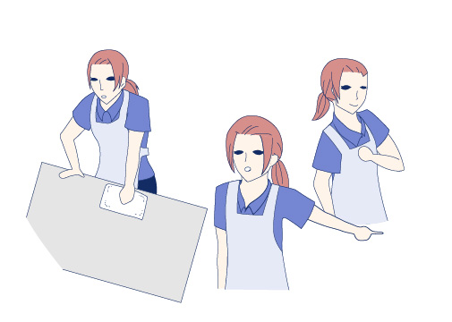

About
私について
健康的な生活を送ることがマイブーム。
-
1.出来る為に努力ができます
入社して三カ月に新会社になり、マニュアルが変わりやり方が変わりました。そして、その時いきなり夜のリーダーポジションを任されました。 そこで仕事中でも休憩中でも勉強の日々を送りました。空いた時間は資料とメモを見て、先輩が忙しくなさそうな時に疑問を聞きに行っていました。 当初は迷惑や心配をかけていたとは思いますが、勤務して一年以上経過して、店長にほんと成長した、頼りになると言われたことは一生忘れられないです。

-
2.培った継続力
仕事をしながらで大変でしたが、Webデザインを取り組んで一年以上経過しました。 それまでの私は継続することが苦手でしたが、自分で設けた「スモールステップ」を毎日こなしていく事で習慣化が可能になりました。 そして筋トレも習慣化することができて心身ともに健康になりました。

-
3.周りを見て働きかけています
お会計が終わったお客様で商品を持っていくのが難しそうな方（お年寄り、妊婦の方、お子さんを抱っこされている方など）の商品をサッカ台に持って行っています。 また閉店に近い時間は、店内の清掃、他部署の仕事や、ナイトマネージャーの代わりにレジ締めをして、率先して手伝っています。 そしてレジのアルバイトを他部署の応援に向かわせたりもしています。

Future
私の未来
継続して取り組んでこれた今の自分が好きで、そしてこれまでの取り組みを生業とし、経験を積んでいきたいです。
Favorite
はまっていること
最初はダイエット目的でしたが、今ではそういう生活をしていることが心地よくて、 自分の習慣として成り立ちました。 ストレス発散にもなり、未来の自分の体形への楽しみも増えました。 約5kg痩せてリバウンドもしていません!
-
1.毎朝の朝食

-
2.美味しく置き換え

-
3.タンパク質を意識

-
4.食事制限ではなく食事管理

-
5.筋トレで体を引き締める

-
6.ウォーキング

-
7.ストレッチ

-
8.完璧を目指さない